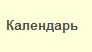
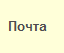
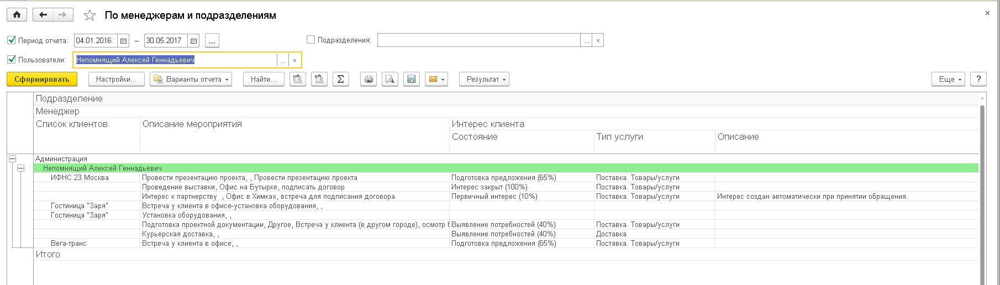
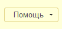

Любое взаимодействие имеет свою цель – это может быть пока просто интерес к услугам и продуктам компании, желание узнать результаты предыдущего обращения или что-либо другое. Для фиксации таких взаимодействий в конфигурации создан документ «Интерес клиента», который создается при выполнении команды «Принять обращение».
 Для принятия входящего Взаимодействия (например, телефонный звонок) используется команда "Принять обращение". Также данная команда может использоваться для поиска клиента и получения информации по нему. Все следующие действия (взаимодействия) выполняются из «Интереса клиента», что позволяет в последующем легко и быстро ориентироваться, на какой стадии находится взаимодействие с конкретным клиентом. Все входящие обращения или запланированные исходящие обращения с клиентами отражаются на рабочем месте "Мои дела". Данная форма выведена по умолчанию на Начальную страницу.
Для принятия входящего Взаимодействия (например, телефонный звонок) используется команда "Принять обращение". Также данная команда может использоваться для поиска клиента и получения информации по нему. Все следующие действия (взаимодействия) выполняются из «Интереса клиента», что позволяет в последующем легко и быстро ориентироваться, на какой стадии находится взаимодействие с конкретным клиентом. Все входящие обращения или запланированные исходящие обращения с клиентами отражаются на рабочем месте "Мои дела". Данная форма выведена по умолчанию на Начальную страницу.
 Для просмотра всех Интересов и связанных с ними Взаимодействий необходимо выбрать команду "Мои продажи".
Для просмотра всех Интересов и связанных с ними Взаимодействий необходимо выбрать команду "Мои продажи".
 Автоматизированное рабочее место (АРМ) "Мои дела" предназначено в большей степени для пользователей, которые мало работают с Интересами, например, для руководителей или менеджеров, которые не ведут продажи. Для менеджеров, которые ведут продажи (много работают с Интересами) предназначен АРМ «Мои продажи».
Автоматизированное рабочее место (АРМ) "Мои дела" предназначено в большей степени для пользователей, которые мало работают с Интересами, например, для руководителей или менеджеров, которые не ведут продажи. Для менеджеров, которые ведут продажи (много работают с Интересами) предназначен АРМ «Мои продажи».
 Команда «Календарь» позволяет открыть Календарь менеджера, в котором можно просмотреть загрузку менеджера по запланированным Взаимодействиям с клиентами. Календарь служит для распределения нагрузки при планировании Взаимодействий с клиентами, как на ближайшее время, так и на более длительные даты.
 Команда «Почта» позволяет открыть список для просмотра и отправления электронных писем из решения.
 Команда "Монитор" используется для контроля и анализа назначенных показателей пользователю, а для Руководителей - для контроля и анализа показателей сотрудников их подразделений. Команда доступна только для пользователей версии КОРП решения 1С: CRM.
Команда "Монитор" используется для контроля и анализа назначенных показателей пользователю, а для Руководителей - для контроля и анализа показателей сотрудников их подразделений. Команда доступна только для пользователей версии КОРП решения 1С: CRM.
Прайс-лист. Отчет позволяет вывести актуальный список продуктов компании и их цены. Отчет позволяет быстро отобрать из всего списка отдельные позиции и их группы, распечатать их или отправить по электронной почте клиенту.
Мой автомотиватор. Отчет позволяет оценить насколько стабильно менеджер планирует свою работу и выполняет норматив по коммуникациям с клиентами. В качестве норматива используется бальная система. Каждое взаимодействие имеет свой балл - коэффициент трудового участия менеджера в течение дня по работе с клиентом. Каждому менеджеру задается норматив в карточке подразделения, к которому он относится (например, 48 баллов). В ходе выполнения взаимодействий менеджер может совершать исходящие и принимать входящие телефонные звонки, проводить встречи. Сумма всех баллов по этим Взаимодействиям определяет выполнение норматива конкретным менеджером.

Воронка продаж. Один из основных отчетов как менеджера, так и руководителя, который позволяет оценить текущее состояние продаж менеджера и/или предприятия в целом. Менеджер при просмотре данного отчета имеет возможность получить расшифровку любого из этапов. При этом расшифровка представлена в виде отчета Контроль руководителя, что позволяет в виде "светофора" отслеживать менеджерам свои недоработки по ведению Интересов.

Контроль руководителя. Отчет позволяет контролировать качество работы менеджеров с клиентами. Отчет выполнен в виде "светофора", где:
Основными показателями качества служат:
Отчет также служит для анализа предопределенных показателей - в зависимости от выбранного "Варианта отчета". Решение поставляется со следующими вариантами отчета:
Анализ мероприятий. Отчет позволяет провести анализ внешних встреч менеджеров, а также получить информацию по каким Интересам были проведены встречи, и сравнить их с планом по встречам у менеджеров. Планы по встречам доступны в случае, если данным пользователям назначен показатель "Проведение встреч". При этом в отчете представлен "светофор", где:

Анализ продаж план-факт. Отчет предназначен для анализа продаж и плана выполнения по следующим показателям (показатели должны быть назначены пользователям):

 Команда «Помощь» позволяет получить помощь по работе в решении - Вы уже воспользовались этой командой :)